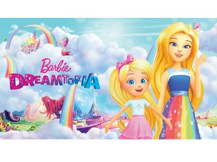
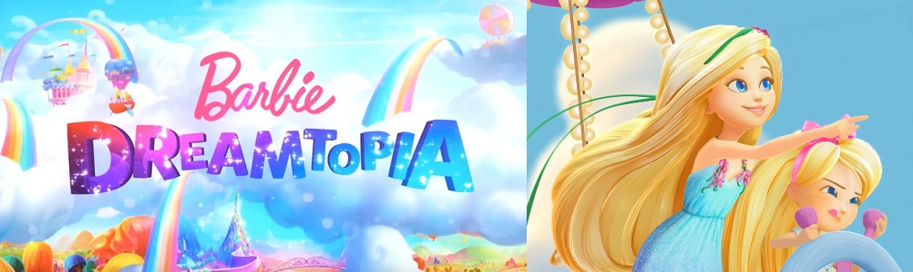
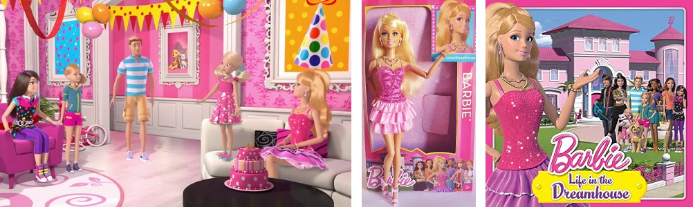
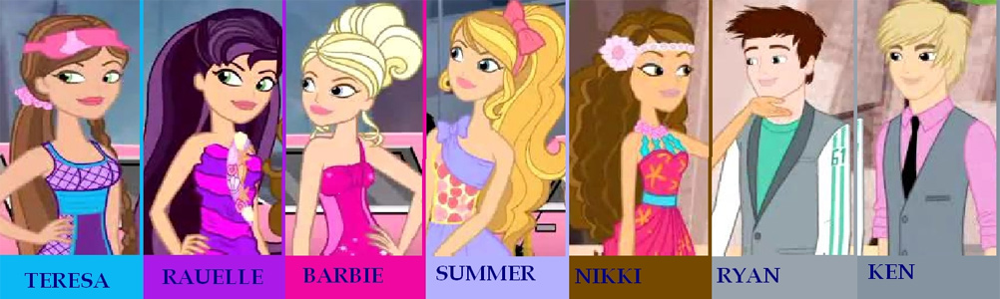

Barbie Dreamtopia es una serie basada en el mundo de Dreamtopia, protagonizada por Barbie y su hermana Chelsea. Se estrenó en Latinoamérica por Discovery Kids el 6 de noviembre del 2017.
 Ver El viaje más dulce | Escena | Barbie™ Dreamtopia: La SerieDreamtopia es una serie de 4 cortos que amplían las aventuras del especial de televisión protagonizada por Chelsea en un viaje por 4 reinos mágicos.
Barbie: Life In the Dreamhouse es una serie animada hecha por ordenador, producida por Arc Productions y distribuidos por Mattel, cuyo estreno fue el 20 de enero de 2012 y finalizó en el año 2015; la serie podía ser vista desde la página oficial de Mattel y por su canal oficial en Youtube. Ha sido visualizada más de 300 millones de veces y ha sido traducido a 21 idiomas distintos, entre ellos el español, alcanzando 13 millones de visitas únicas al mes.
En el año 2010 Mattel lanzó una serie web animada de Barbie Fashionistas que tuvo 5 episodios. Barbie Fashionistas es una serie web de 2010 que estaba en Barbie.com. Se basa en la línea de muñecas del mismo nombre. Cada episodio duró aproximadamente 5 minutos y los episodios estuvieron disponibles desde el 27 de noviembre de 2010, pero luego se eliminaron.
 En el año 2010 Mattel lanzó una serie web animada de Barbie Fashionistas que tuvo 5 episodios. Barbie Fashionistas es una serie web de 2010 que estaba en Barbie.com. Se basa en la línea de muñecas del mismo nombre. Cada episodio duró aproximadamente 5 minutos y los episodios estuvieron disponibles desde el 27 de noviembre de 2010, pero luego se eliminaron.